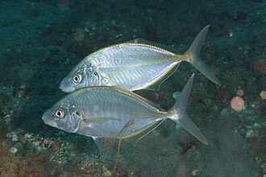

しまあじの生産量 都道府県ランキング
全11都道府県の順位と収獲量
しまあじの収獲量が全国で最も多いのは愛媛県で、2,242 tです。全国（4,428 t）の51%を占めます。

| 順位 | 都道府県 | 収獲量 | 全国に占める割合 |
|---|---|---|---|
| 1位 | 愛媛県 | 2,242 t | 51% |
| 2位 | 熊本県 | 769 t | 17% |
| 3位 | 高知県 | 439 t | 9.9% |
| 4位 | 大分県 | 327 t | 7.4% |
| 5位 | 鹿児島県 | 179 t | 4.0% |
| 6位 | 長崎県 | 153 t | 3.5% |
| 7位 | 三重県 | 131 t | 3.0% |
| 8位 | 宮崎県 | 75 t | 1.7% |
| 9位 | 和歌山県 | 21 t | 0.5% |
| 10位 | 佐賀県 | 20 t | 0.5% |
| 11位 | 静岡県 | 10 t | 0.2% |
PR

しまあじの生産量の推移（令和2年〜令和6年）
全国の収獲量は、令和2年の4,042 tから令和6年の4,428 tへ、10%増えました。期間中、1位は一貫して愛媛県です。
| 年 | 全国 | 1位 | 2位 | 3位 |
|---|---|---|---|---|
| 令和6年 | 4,428 t | 愛媛県2,242 t | 熊本県769 t | 高知県439 t |
| 令和5年 | 4,710 t | 愛媛県2,524 t | 熊本県736 t | 高知県398 t |
| 令和4年 | 4,488 t | 愛媛県2,170 t | 熊本県801 t | 大分県483 t |
| 令和3年 | 3,836 t | 愛媛県1,749 t | 熊本県763 t | 大分県435 t |
| 令和2年 | 4,042 t | 愛媛県1,916 t | 熊本県697 t | 大分県468 t |
この数字について
- 分類：鯵の仲間
- 全国の収獲量：4,428 t
- この数字が表すもの：収獲量（養殖による収獲量）
- 調査：海面漁業生産統計調査（海面養殖業） 令和6年
- この品目は養殖の統計です。
- 11県分を調査（調査していない県は順位に入りません）
しまあじの生産量について、よくある質問
- しまあじの生産量が日本一の都道府県はどこですか？
- 愛媛県です。海面漁業生産統計調査（海面養殖業）（令和6年）で2,242 tでした。
- しまあじの生産量ランキング2位・3位はどこですか？
- 2位は熊本県（769 t）、3位は高知県（439 t）です。
- しまあじの生産量ランキング4位・5位はどこですか？
- 4位は大分県（327 t）、5位は鹿児島県（179 t）です。しまあじの全11県の順位は上の表のとおりです。
- しまあじの全国の生産量はどれくらいですか？
- 4,428 t（令和6年）です。
広告